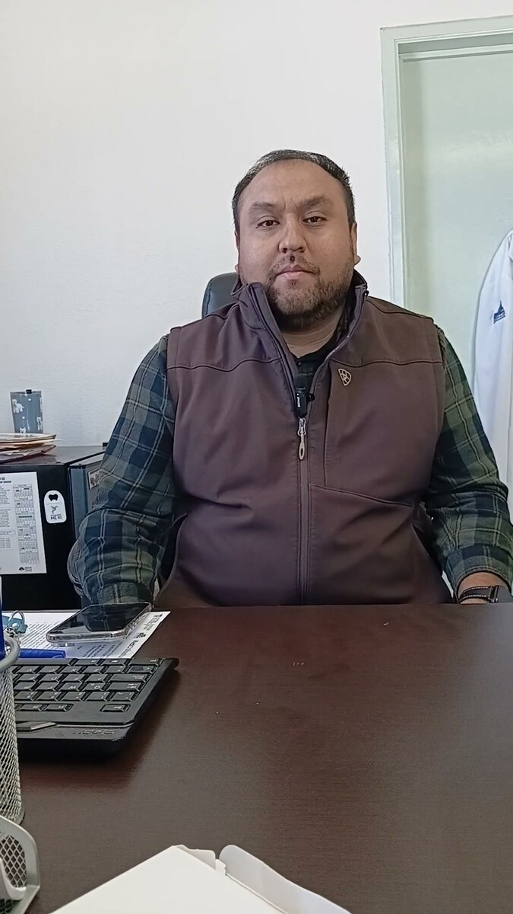
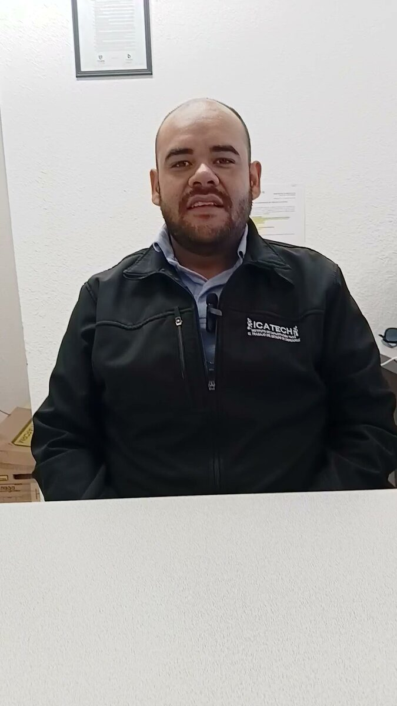
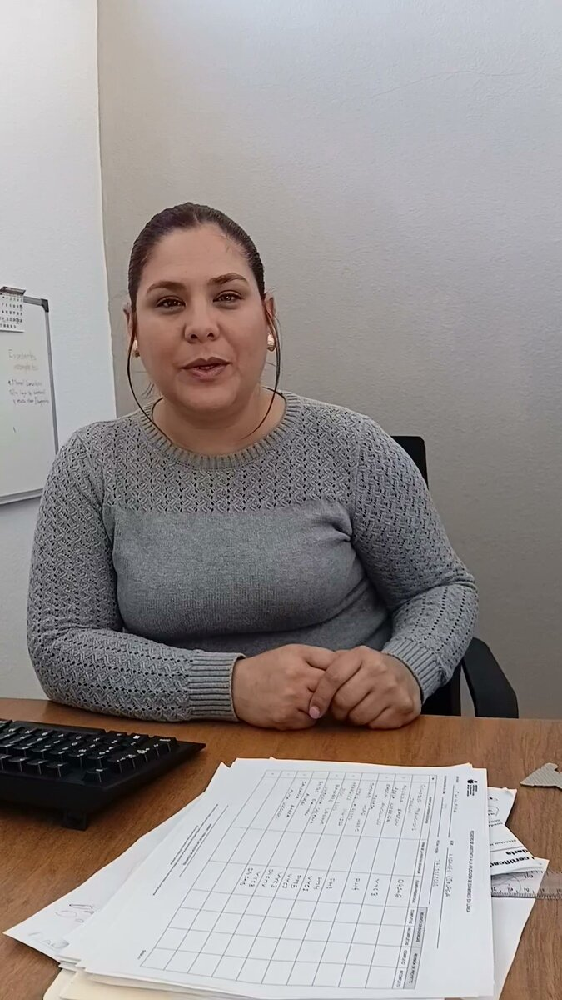
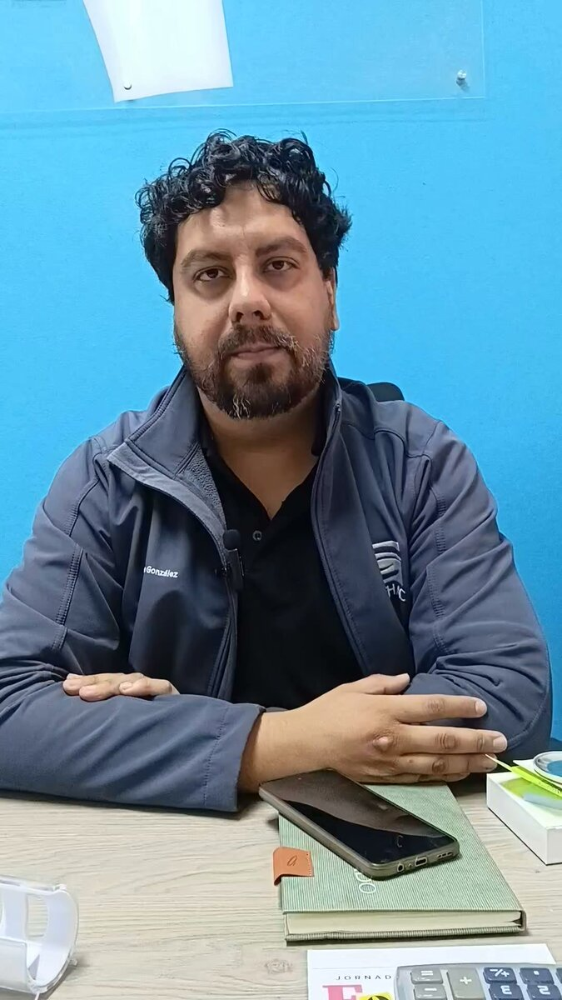
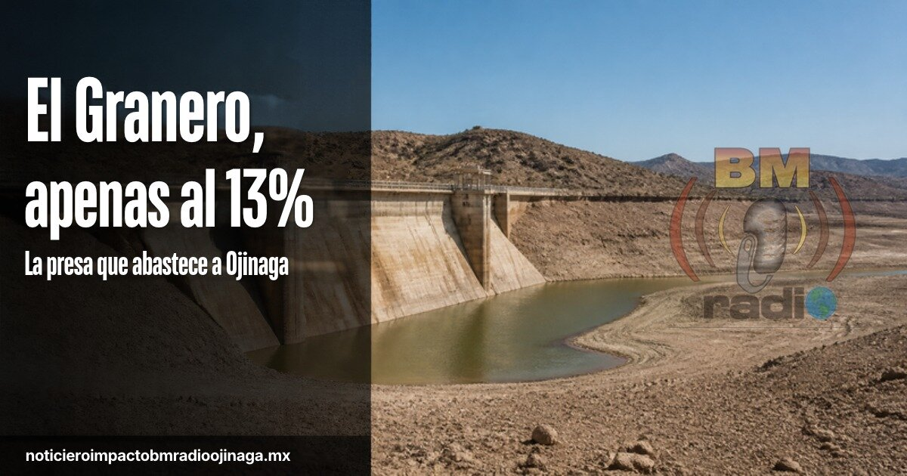
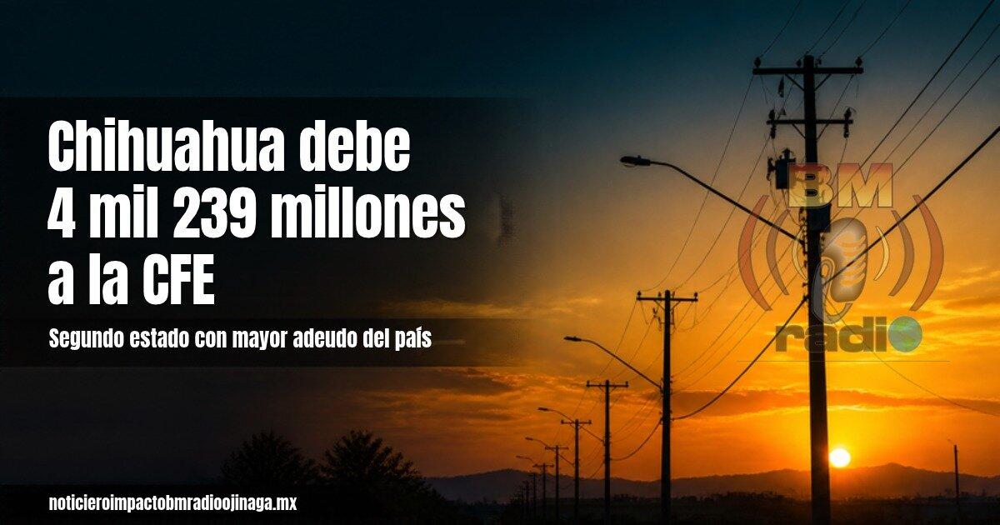
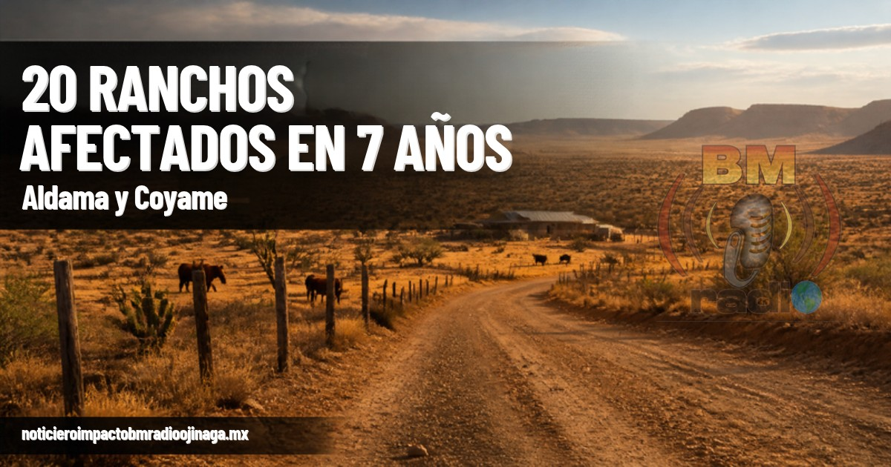
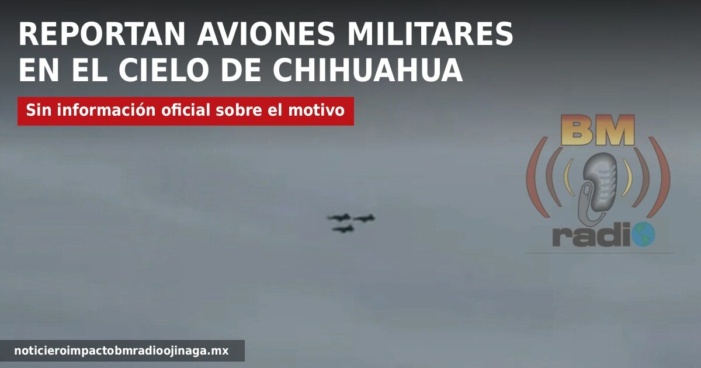
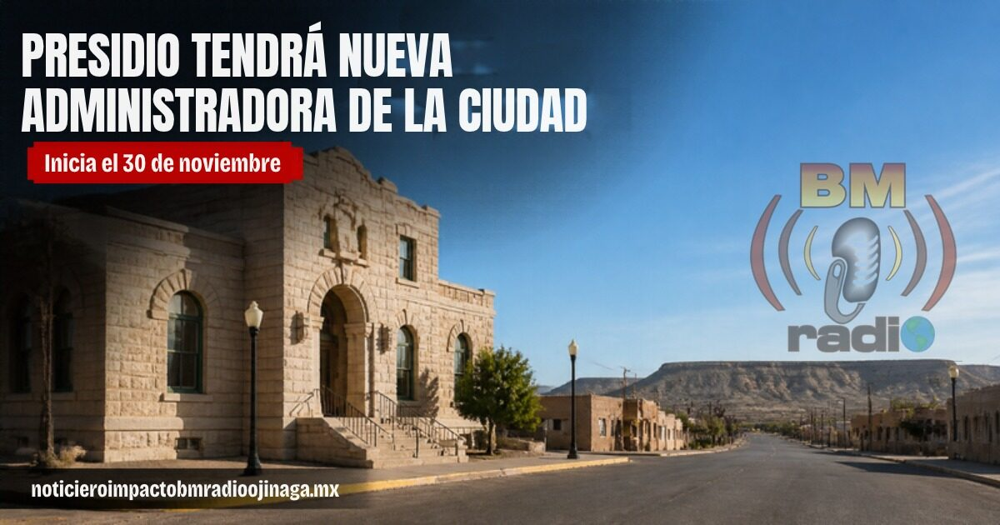

Policiaca
Autoridades de México y Estados Unidos presentaron en El Paso, Texas, una nueva etapa del programa binacional “Se Busca Información – WANTED 2026”, que amplía de 10 a 20 el número de objetivos prioritarios vinculados con organizaciones criminales transnacionales. La estrategia busca facilitar la identificación, localización y detención de personas relacionadas con delitos de alto impacto, como narcotráfico, tráfico de fentanilo y trata de personas, mediante el intercambio de información y la colaboración ciudadana. El alcalde de Ciudad Juárez, Héctor Rafael Ortiz Orpinel, destacó la importancia de fortalecer la coordinación entre ambos países y las corporaciones de seguridad, mientras que autoridades estadounidenses informaron que los perfiles de los 20 objetivos serán difundidos en redes sociales, televisión, carteles y espectaculares. Se informó que, desde 2019, el programa ha contribuido a llevar ante la justicia a diez personas buscadas gracias a información proporcionada por ciudadanos. Las autoridades de ambos países hicieron un llamado a la población para aportar información mediante canales de denuncia anónima y confidencial, como parte de los esfuerzos para combatir a las organizaciones criminales que operan en ambos lados de la frontera.
Local
Este jueves 19 y viernes 20 de noviembre llega Ópticos UM al DIF Municipal de Ojinaga con examen de la vista gratis y lentes adaptados y económicos desde 400 pesos. La atención será en el DIF Ojinaga, calle Hombres Ilustres número 1000, colonia Emiliano Zapata, de 11 de la mañana a 4 de la tarde. Se aceptan tarjetas de débito y crédito. Más información al 614 553 9524.
Nacional
Las familias que no alcanzaron a registrar a sus hijos en línea para la Beca Rita Cetina pueden hacerlo de forma presencial en las oficinas de Bienestar de su municipio, a más tardar el sábado 22 de noviembre. De acuerdo con la Delegación de Programas para el Bienestar, los alumnos de primaria y secundaria inscritos en octubre y noviembre recibirán su apoyo entre diciembre y enero. Además, hasta el 30 de noviembre se entregan en las escuelas las tarjetas de las becas Benito Juárez. Las fechas de cada plantel se publicarán en carteles afuera de las escuelas.

Local
En este video, el doctor Jassiel Hernández López, jefe de los Servicios de Salud Distrito Ojinaga, habla sobre la importancia de las vacunas. Mira el video completo en Facebook.


Local
En este video, la licenciada en Educación Yolanda Valdez Greco, enlace del ICHEA en Ojinaga, habla sobre la deserción de estudiantes en el instituto, que señala que es poca. Mira el video completo en Facebook.

Local
En este video, el licenciado Jorge González Chaidez, administrativo de Fechac, habla de la campaña dental y del encuentro de las asociaciones civiles. Mira el video completo en Facebook.

Local
La presa Luis L. León, conocida como El Granero, en Aldama, es la que está en peor situación del estado: tiene 37.97 millones de metros cúbicos, el 13.35 por ciento de su capacidad. De esta presa depende el agua que baja por el río Conchos hacia la región de Ojinaga. En todo el estado, las diez presas que monitorea Conagua están al 33.7 por ciento, con una ligera recuperación en los últimos días. Aun así, tienen 535 millones de metros cúbicos menos que hace un año, cuando estaban al 47 por ciento. La Boquilla sigue por debajo del 30 por ciento, con 29.53 por ciento, y hay preocupación por el agua para el próximo ciclo agrícola.

Estatal
El gobierno de Chihuahua tiene un adeudo de 4 mil 239 millones de pesos con la Comisión Federal de Electricidad. Es el segundo más alto del país, solo después de Sonora, con 4 mil 921 millones. Las cifras son de registros de la CFE al 31 de agosto, difundidos por medios nacionales a través de una solicitud de transparencia. En todo el país, estados y municipios le deben a la CFE más de 42 mil 600 millones de pesos por alumbrado público, bombeo de agua y oficinas de gobierno. Le siguen Chiapas, con 2 mil 473 millones, y Baja California, con 2 mil 96 millones.
Nacional
En este video, la presidenta Claudia Sheinbaum Pardo recorre el Hospital Popular del Distrito de Nanshan, en Shenzhen, China, donde conoció el uso de inteligencia artificial para detectar enfermedades y de robots que trasladan medicamentos y muestras. Informó que acordó impulsar una mayor cooperación entre ambos países para buscar incorporar estos avances al sistema de salud mexicano. Mira el video completo en Facebook.
Estatal
Mireya Porras Armendáriz, exdirigente municipal del PRI en Ciudad Juárez, y Aldonza González Amador, exdirigente estatal de las mujeres priistas, dieron su voto de confianza a Cruz Pérez Cuéllar. Él es coordinador estatal de los Comités de Defensa de la Transformación. Ambas dijeron que es una decisión personal y que buscan aportar su experiencia. Por su parte, la presidenta nacional de Morena, Ariadna Montiel, dijo que Pérez Cuéllar “anda muy bien” recorriendo el estado. Agregó que el partido abrirá espacios a perfiles de otras fuerzas, de manera ordenada.
Policiaca
La Fiscalía Zona Centro propondrá a la mesa de seguridad retomar la campaña de desarme ciudadano en la capital. Del 1 al 15 de noviembre se registraron 16 homicidios. Al menos cinco no estarían ligados al crimen organizado, sino a riñas entre particulares, según las primeras investigaciones.
Nacional
Se llevó a cabo una reunión con el presidente de Estados Unidos, Donald Trump, y parte de su equipo de trabajo, en la que se abordaron temas de interés bilateral. A través de un mensaje, se informó que el encuentro fue positivo y permitió continuar avanzando en la agenda común entre ambos gobiernos. “Sostuvimos una muy buena reunión con el presidente Donald Trump y su equipo. Seguimos avanzando en la agenda común”, se informó. Hasta el momento no se han dado a conocer mayores detalles sobre los acuerdos o temas específicos abordados durante el encuentro.

Policiaca
Tras los videos que circularon en redes sobre ranchos incendiados y familias desplazadas en Aldama y Coyame, el fiscal de la Zona Centro, Daniel Terrazas, aclaró que esos 20 ranchos se acumulan a lo largo de los últimos siete años y no son hechos recientes. Reconoció que la zona está en conflicto y que no todos los afectados presentan denuncia. Indicó que se refuerza la seguridad en las comunidades.
Estatal
Pobladores de Témoris, en el municipio de Guazapares, reportaron un incendio en un vagón del tren de pasajeros Chepe este martes, entre las 4 y las 5 de la tarde, cuando el tren hacía su recorrido rumbo a Sinaloa. En videos compartidos por habitantes se observa una columna de humo saliendo de uno de los vagones. Según medios locales, el fuego fue controlado y hasta el momento no se reportan personas lesionadas. Las autoridades y la empresa operadora no han informado la causa ni el estado del servicio.
Estatal
El Tribunal Estatal Electoral revocó por unanimidad el acuerdo del Instituto Estatal Electoral que obligaba a todos los partidos a postular mujeres a la presidencia municipal en Juárez, Cuauhtémoc, Camargo, Janos y Nonoava en 2027. Ahora cada partido elegirá cinco municipios de una lista de 23 donde nunca ha gobernado una mujer. Además, deberá cumplir con la paridad: al menos la mitad de sus candidaturas a alcaldías serán para mujeres.

Estatal
Habitantes de Chihuahua reportaron este martes el paso de tres aviones de combate y lo grabaron en video. Hasta el momento no hay información oficial sobre de dónde venían ni por qué volaban.

Frontera
El Concejo de Presidio, Texas, nombró a Ethel Barriga, originaria de Presidio y vicepresidenta de un banco local desde hace 25 años, como nueva administradora de la ciudad. Empieza el 30 de noviembre y estará a cargo de todos los departamentos y del personal municipal. Sustituye a Pablo Rodríguez, que renunció en julio después de cuatro años en el cargo. Barriga también fue 13 años integrante del consejo escolar de Presidio.
Frontera
La red interna de comunicaciones de la Agencia de Seguridad Nacional de Estados Unidos (NSA) dejó de funcionar este martes, según medios estadounidenses. Se trata de NSANet, el sistema que usa esa agencia para compartir información clasificada de manera segura. De acuerdo con reportes periodísticos, la falla se debió a una actualización de software y no hay señales de un ciberataque. Hasta el momento, la NSA no ha dado declaraciones ni ha informado cuándo se restablecerá el servicio. El caso ocurre en medio de otras fallas tecnológicas registradas en Estados Unidos en los últimos días. Un funcionario de seguridad de ese país aseguró que esas fallas tampoco fueron ciberataques.